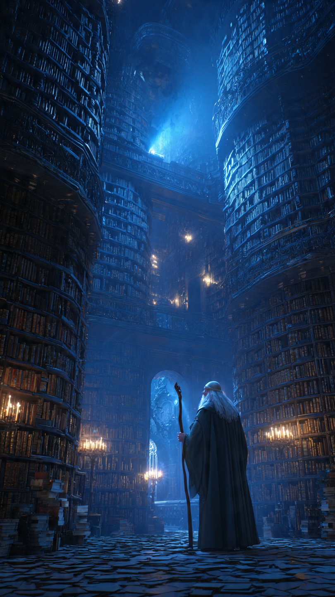
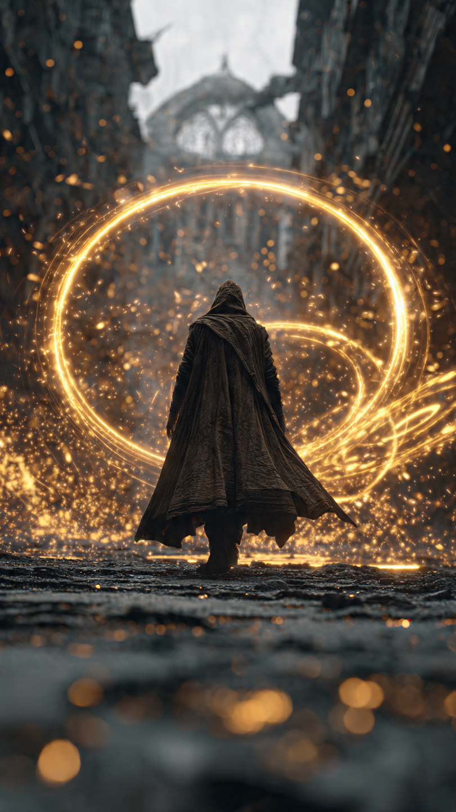

منذ آلاف السنين، كان السحر جزءًا من حياة البشر.
كانت المدن تُضاء بكراتٍ من الضوء السحري، والأنهار تُشق بتعاويذ قديمة، والمرضى يُشفون بكلمات لا يعرف معناها إلا السحرة.
لكن ذلك الزمن انتهى.
اندلعت حربٌ عظيمة بين السحرة، استخدم فيها كل طرف أقوى التعاويذ المحرمة.
وانتهت الحرب باختفاء السحر من العالم... وكأن الأرض نفسها قررت أن تخفيه إلى الأبد.
ومع مرور القرون، أصبحت قصص السحرة مجرد أساطير يرويها الأجداد للأطفال.
في مدينة حديثة، كان يعيش شاب يُدعى آدم.
كان يعمل في مكتبة قديمة يعشقها، ويقضي ساعات طويلة بين الكتب النادرة والمخطوطات المنسية.
وذات مساء، بينما كان يرتب الرفوف في القبو، لاحظ كتابًا لم يره من قبل.
كان مغلفًا بجلد أسود، ولا يحمل أي عنوان.
وعندما حاول فتحه...
رفض أن يتحرك، وكأن قوة خفية تمنعه.
لكن ما إن لمس آدم غلافه بكلتا يديه، حتى بدأ الكتاب يتوهج بلون أزرق.
وانفتح وحده.
لم تكن صفحاته مليئة بالكلمات...
بل كانت فارغة.
ثم بدأت الحروف تظهر ببطء أمام عينيه.
كانت الجملة الأولى تقول:
"إذا كنت تقرأ هذا... فأنت آخر من يستطيع إعادة السحر."
وقبل أن يستوعب ما يحدث، اهتزت أرضية المكتبة.
وسقطت بعض الكتب من الرفوف.
ثم انفتح جدار حجري قديم في نهاية القبو، ليكشف عن ممر لم يكن موجودًا من قبل.
كان الممر مضاءً بمشاعل زرقاء لا تنطفئ.
وفي نهايته ظهر باب ضخم عليه رمز نجمة داخل دائرة.
اقترب آدم بحذر.
وما إن وضع يده على الباب، حتى انفتح ببطء.
وفي الداخل...
وجد قاعة واسعة مليئة بالكتب الطائرة، والبلورات المضيئة، والعصي السحرية القديمة.
وفي منتصف القاعة وقف رجل طويل يرتدي عباءة رمادية، وله لحية بيضاء طويلة.
كان ينظر إليه وكأنه كان ينتظره منذ سنوات.
قال الرجل بصوت هادئ:
"تأخرت كثيرًا يا آدم."
"أنا إلياس..."
"آخر ساحر على وجه الأرض."
شعر آدم أن قلبه يكاد يتوقف.
وقبل أن يسأله أي سؤال...
رفع إلياس عصاه نحو السقف.
فانفتحت القبة الحجرية.
وظهرت السماء فوقهما.
لكنها لم تكن سماءً عادية...
بل كانت مليئة بآلاف الرموز السحرية المضيئة.
ثم قال إلياس:
"ما رأيته الآن... ليس سوى البداية."
📷 الصورة رقم 1

دخل آدم القاعة وهو لا يزال غير مصدق ما يراه.
كانت الكتب تطير بين الرفوف من تلقاء نفسها.
والبلورات المضيئة تنير المكان دون نار أو كهرباء.
أما الجدران، فكانت مغطاة برموز سحرية تتحرك ببطء، وكأنها كائنات حية.
شعر وكأنه دخل عالمًا ظل مخفيًا عن البشر لقرون.
ابتسم إلياس وقال:
"بعد الحرب الكبرى، لم يختفِ السحر..."
"بل اختبأ."
"قرر السحرة إغلاق أبواب عالمهم حتى لا تتكرر الكارثة."
"ومع مرور الزمن، مات الجميع..."
"ولم يبقَ سواي."
ثم سلّم آدم عصًا خشبية بسيطة.
وقال:
"إذا كنت حقًا المختار..."
"فسوف تستجيب لك."
أمسك آدم العصا بتردد.
في البداية لم يحدث شيء.
لكن بعد لحظات...
أضاء طرف العصا بلون أزرق هادئ.
ثم بدأت الكتب تدور حوله في الهواء.
وتحركت البلورات كأنها ترحب به.
ابتسم إلياس وقال:
"لقد اختارتك."
بدأت أيام طويلة من التدريب.
تعلم آدم كيف يحرك الأشياء دون لمسها.
وكيف يصنع دروعًا من الضوء.
وكيف يستخدم التعاويذ لحماية الآخرين بدلًا من إيذائهم.
وكان إلياس يكرر دائمًا:
"السحر الحقيقي لا يقاس بالقوة..."
"بل بالحكمة."
لكن في إحدى الليالي، انطفأت جميع البلورات فجأة.
واهتزت القاعة بعنف.
واخترق جدارها سهم أسود مصنوع من الظلال.
اقترب إلياس منه، ولمسه بحذر.
ثم تغير لون وجهه.
وقال بصوت منخفض:
"لقد وجدونا."
سأل آدم بقلق:
"من؟"
أجاب إلياس:
"فرسان الظل."
"منظمة قديمة أقسمت على القضاء على كل أثر للسحر."
"وكانوا يظنون أنني مت منذ زمن."
"لكن يبدو أن ظهورك كشف مكاننا."
وفجأة دوى انفجار هائل.
وانهار جزء من سقف القاعة.
ومن بين الدخان دخل رجل يرتدي درعًا أسود، ويحمل سيفًا تتصاعد منه خيوط من الظلام.
رفع السيف نحو إلياس وقال:
"انتهى زمن السحرة."
ثم نظر إلى آدم، وابتسم ابتسامة باردة.
وأضاف:
"وسأبدأ بآخر تلميذ."
📷 الصورة رقم 2

وقف آدم أمام إلياس، بينما كان فرسان الظل يدخلون القاعة واحدًا تلو الآخر.
كانت دروعهم السوداء تمتص الضوء، وسيوفهم تترك خطوطًا من الظلام في الهواء.
أما قائدهم، فرفع سيفه وقال:
"لقد انتظرنا هذه اللحظة لقرون."
"اليوم... سينتهي السحر إلى الأبد."
ابتسم إلياس بهدوء.
ثم غرس عصاه في أرض القاعة.
وخلال لحظات، أضاءت آلاف الرموز السحرية على الجدران.
ارتفعت الكتب في الهواء.
وتحولت البلورات إلى دوائر من الضوء تحيط بالمكان.
قال إلياس لآدم:
"تذكر..."
"السحر لا ينتصر بالغضب."
"بل بالقلب الذي يعرف لماذا يقاتل."
اندلعت المعركة.
أطلق فرسان الظل سهامًا سوداء، لكن آدم صنع درعًا من الضوء لأول مرة دون مساعدة.
ارتطمت السهام بالدرع وتحولت إلى غبار.
وفي السماء، بدأت الكتب القديمة تفتح صفحاتها وحدها، لتنطلق منها تعاويذ مضيئة أوقفت تقدم الأعداء.
لكن قائد فرسان الظل كان أقوى من الجميع.
رفع سيفه عاليًا.
فضرب أرض القاعة.
فتشققت الأرض، وانطفأت معظم الرموز السحرية.
ثم وجه هجومه نحو إلياس مباشرة.
تقدم إلياس لحماية تلميذه.
وتلقى الضربة بدلًا منه.
سقط على ركبتيه، لكنه ظل مبتسمًا.
وقال لآدم بصوت ضعيف:
"حان وقت الساحر الجديد."
أغمض آدم عينيه.
وتذكر كل ما تعلمه.
لم يطلب القوة.
ولم يفكر في الانتقام.
بل تمنى شيئًا واحدًا فقط...
أن يبقى السحر وسيلة للخير.
في تلك اللحظة، بدأت عصاه تتوهج بضوء ذهبي لم يره إلياس من قبل.
وامتلأت القاعة بالنور.
واختفى الظلام تدريجيًا من سيوف الفرسان.
وسقطت أسلحتهم على الأرض.
أما قائدهم، فتلاشى درعه الأسود، وعاد إنسانًا عاديًا بعد أن تحرر من السحر المظلم الذي سيطر عليه لسنوات.
نظر إلياس إلى آدم، وابتسم للمرة الأخيرة.
ثم قال:
"الآن... لم أعد آخر ساحر."
"لقد أصبح للعالم من يحرسه من جديد."
تحولت عصاه إلى آلاف النقاط المضيئة، واختفى جسده بهدوء، كأنه أصبح جزءًا من الضوء نفسه.
بعد سنوات، لم يعرف الناس أن السحر عاد إلى العالم.
لكنهم كانوا يشعرون أحيانًا بأشياء لا يمكن تفسيرها.
طفل ينجو بمعجزة.
شجرة يابسة تزهر فجأة.
نور غريب يظهر في السماء ثم يختفي.
أما آدم...
فقد عاد إلى مكتبته القديمة.
وكان يبتسم كلما دخل طفل يبحث عن كتاب جديد.
لأنه كان يعرف...
أن أعظم أنواع السحر ليست التعاويذ.
بل المعرفة، والرحمة، واستخدام القوة لحماية الآخرين.